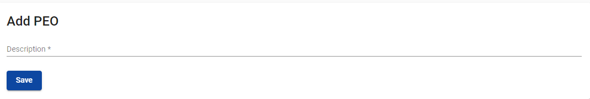
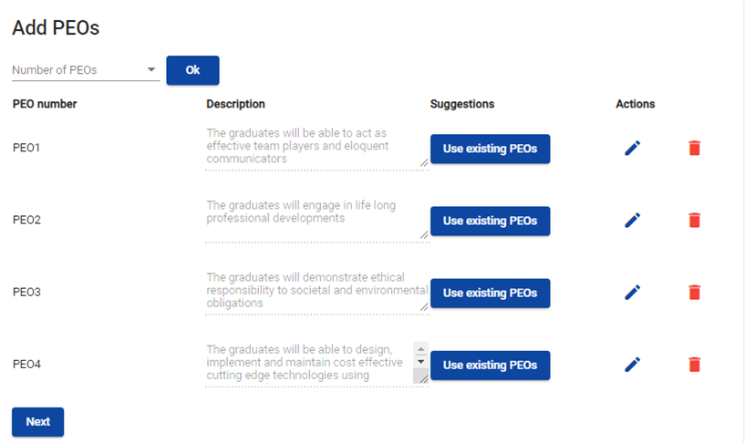
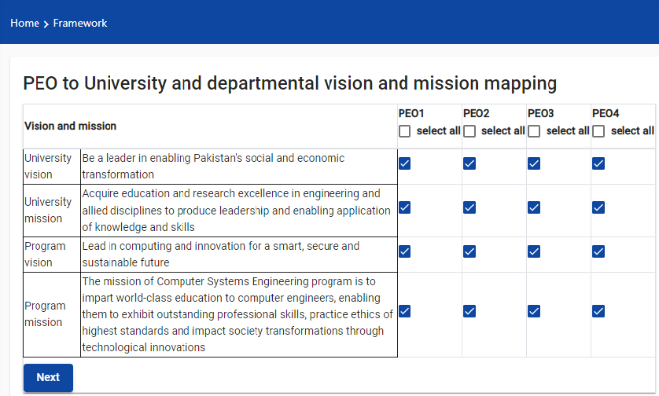
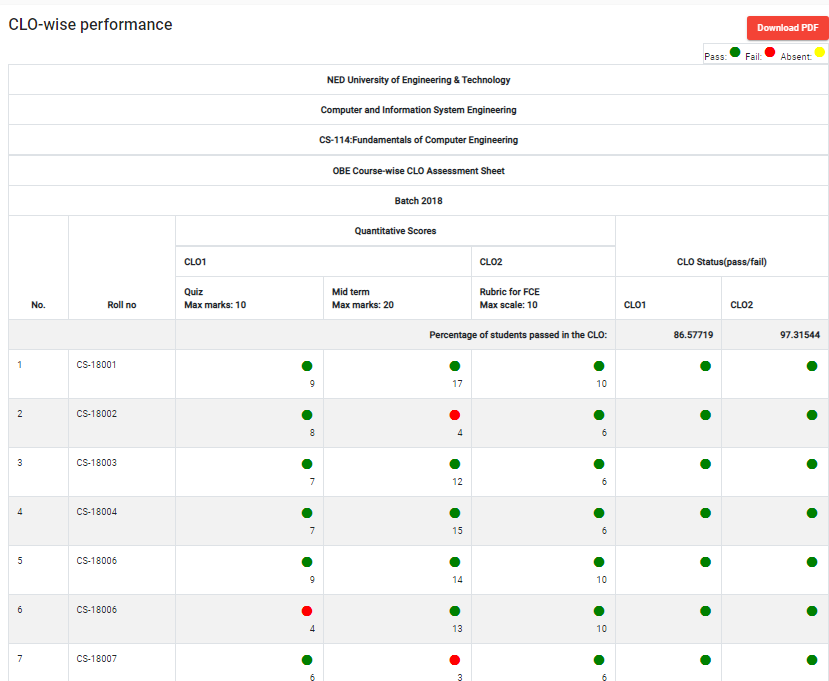
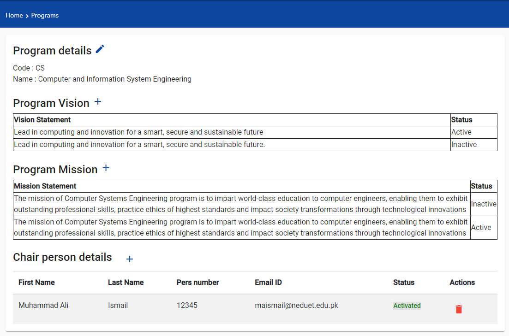

- Getting Started
- Setup Screens
- Users
- Framework
- Existing framework
- Existing framework
Setup Screens
The setup screens allow the user to define PEOs, PLOs and courses for a program. These entities can then be used later during the creation of framework.
Here, you can also create batches, which are used at the time of adding students to the system. Each student is associated to a batch defined for a program.
Add/Edit/View PEOs
From the side pane, click Setup Screens>Add/View PEOs. The PEO list contains all the PEOs created for the program so far. Clicking on the pencil icon lets the user edit the text of the PEO. "Add a PEO" button will take the user to the next screen where a new PEO can be added
In order to create a new PEO, type in the PEO description and hit the save button.

Add/Edit/View PLOs
From the side pane, click Setup Screens>Add/View PLOs. It will show the list of PLOs in the system for the user's program. The pencil icon lets the user make any modifications to the text of the PLO. "Add a PLO" button will redirect the user to the next screen where they can add a new PLO.
In order to create a new PLO, type in the title and description of the PLO and hit the Save button.
Add Bloom's Taxonomy
Go to Setup Screens>Bloom's Taxonomy. Here you can add a new verb to a domain by following the following steps:
- Select the desired domain.
- Select the sub-domain level in which you want to enter the verb.
- A list of already present verbs in the selected sub-domain will appear.
- Type in the verb you want to add and hit the "Ok" button.
Add/Edit/View Courses
View Courses
Go to Setup Screens>View Courses. A list of all the courses in the program will appear. The pencil icon lets the user edit the course.
Add Courses
Go to Setup Screens>Add Course. There are two ways to enter courses in the system. You can add the courses one-by-one by using the form or use the bulk upload option.
If you are adding courses one by one, type in the course code, name and check the tick box if the course is practical. Press the save button
If you are using bulk upload, follow these steps:
- Download the template file.
- Fill in the data carefully according to the format.
- Upload the file
- Click "Submit"
Add/View Batches
Go to Setup Screens>Add/View Batches.
In order to add a new batch,
- Provide the name of the batch.
- Select the framework it follows from the select menu.
- Provide the number of section
- Choose start and end date.
- Press "Save"
The table at the bottom shows the batches already created in the program.
Add/View Users
Add Staff
In order to add staff members, from the side pane, select Users>Add Users>Add Staff.
The users can either be added one by one using the UI or the bulk upload option can also be used.
If you are adding users one by one, type in the required data. Press the save button.
If you are using bulk upload, follow these steps:
- Download the template file.
- Fill in the data carefully according to the format.
- Upload the file.
- Click "Submit".
Add Students
In order to add students, from the side pane, select Users>Add Users>Add Student.
The users can either be added one by one using the UI or the bulk upload option can also be used.
If you are adding users one by one, type in the required data. Press the save button.
If you are using bulk upload, follow these steps:
- Download the template file.
- Fill in the data carefully according to the format.
- Upload the file.
- Click "Submit".
View Users
View Staff
In order to view all the staff members of the program, from the side pane, select Users>View Users>View Staff
On the top right corner of the screen, there's an "Activate All Users" button. Clicking this button activates all the staff member of the program. This means that after clicking this button, a username and password will be sent to the email address of all the staff members. The user can use these credentials to log into their profile in the system.
In the table, in the status column, the "activated" status shows that the user has been activated. "Activate" button activates the user if they were not previously activated for some reason.
View Students
In order to view all the students of the program, from the side pane, select Users>View Users>View Student
On the top right corner of the screen, there's an "Activate All Users" button. Clicking this button activates all the students of the program. This means that after clicking this button, a username and password will be sent to the email address of all the students. The user can use these credentials to log into their profile in the system.
In the table, in the status column, the "activated" status shows that the user has been activated. "Activate" button activates the user if they were not previously activated for some reason.
OBE Framework
Following is the complete flow of the framework.
Add a new framework
For adding a new framework, user has to enter the name of the framework. The university mission and vision is returned by the system itself. The user can either create a new program mission or vision or choose from the existing ones.
Add PEOs
The user has to select the number of PEOs to be added in the framework. User either creates new PEOs by providing text in the description box or choose from the existing ones.

Map university and program mission vision to PEOs
The user has to map university and program mission and vision to PEOs

Add PLOs to framework
The user has to select the number of PLOs to be added in the framework. User either creates new PLOs by providing text in the description box or choose from the existing ones.
Map PLOs to PEOs
The user has to map PLOs to PEOs.
Add Courses to framework
The user has to select the number of courses to be added in the framework. User either creates new courses by providing course code and name or choose from the existing ones.
Set CLOs for courses
User has to select a course then provide the number of CLOs to be added for that course. The user has to specify that the CLO is a practical CLO or not (so that it is viewed by the respective teacher, theory or practical). The user maps the CLO to a PLO with a particular taxonomy level. Based on the taxonomy level selected, verb list is populated. The user can create a CLO from scratch or make it with help of the verb list provided.
Review of PLO to courses mapping
Here the user is displayed a review of PLO to course mapping. Thsi review is based on the course to CLO mapping done previously.

KPI Settings
The user has to provide CLO attempt passing percentage on Individual and Cohort level. Grading method for a CLO is fixed on "Average of the Attempts". In this grading method, the result of a CLO for a student will be based on the average of the number of attempts. The system will automatically take out the best attempts from the total attempts taken for the attempts to be considered.
For PLO KPI settings, the user must provide PLO passing percentage on Individual and Cohort level.
The least percentage for CLO and PLO KPI settings is 50%.

FY(D)P
User has to provide name and code for FY(D)P. Mapping of FY(D)P to PLOs is also done on this screen.
Reports
Following reports will be viewed by the HOD of the Department.
PLO Assessment Report
User can view PLO report for a particular batch. The report clearly shows the plo status of students. Moreover, it also shows the status for over all batch. Here
- Red indicates failed CLO.
- Green indicates passed CLO.
- Yellow indicates unevaluated CLO.
Course-wise PLO Assessment Report
User can view Course-wise PLO report for a particular batch. User first selects a PLO, then he/she can clearly see the status of students for a PLO in a course. Moreover, it also shows the status for over all batch. Here
- Red indicates failed CLO.
- Green indicates passed CLO.
- Yellow indicates unevaluated CLO.
PLO transcript
User can view PLO report transcript for a student. User first selects a batch, then he/she can clearly see all the students in a particular batch and can view the transcripts of individual students. The transcript contains the list of the courses, FY(D)P and surveys along with their percentage a student has attained to their mapped PLOs. The transcript can be downloaded in PDF format. Here
- Yellow indicates that the evaluation for a PLO in a course is not yet completed.
CLO Report
User selects a batch which then shows the courses offered to that batch for the current semester. After selecting a course, user can view the CLO report which contains all the attempts of evaluations and rubrics. Here
- Green indicated passed
- Red indicated failed
- Yellow indicates absent
- Black indicates that the marks have not been entered yet

Teacher Course Mapping
User selects a framework which then shows the courses offered for the current semester for that framework along with their mapping with teachers teaching to respective sections.
Semester Progress Status
User selects a framework which then shows the courses offered for the current semester for that framework along with their mapping with teachers. If a teacher has frozen the marks of a course, it shows the status of course completed for that teacher. The user can also unfreeze a course if he/she finds out later that the status is not completed yet.
Semesters
Creation of a new semester is the most crucial part of the system. User can
- Create, edit and view a semester.
- Offer Courses
- Assign courses to teacher and batch
Start new semester
New semester cannot be started until all the courses of the current semester are completed. To view the course progress of the current semester, please view 'Reports>Semester Progress Status'. In order to start a new semester, name, start date and end date are provided. User then selects a framework and add courses to be offered from that framework in the current semester.
View/Edit Semester
User can view the details of the semester. After clicking on the view details button, user can view the offered courses in the semester. Courses can also be added in the semester selected.
Courses can also be added in the semester selected.
Assign courses to teachers
After selecting a framework, courses offered in the current semester for that framework appear along with the the list of teachers. User selects a batch for which the course has to be offered then assigns teachers to individual sections accordingly.

CEP/CEA
To add/view rubrics associated with CEP/CEA (Complex Engineering Problem/Activity), please go to Practical Rubrics>Practical Courses. User has to choose a framework through which the practical courses offered for the framework in the current semester can be viewed.
After selecting a course User can add a new rubric, view and edit the existing ones.
- Add a rubric
- View a rubric
- Edit a rubric
- Delete a rubric
FY(D)P
In order to perform operations on the FY(D)P of the program, please refer to this section.
View FY(D)P Rubrics
To view FY(D)P rubrics, go to FY(D)P>View FY(D)P Rubrics. Choose the batch. Now you will be able to see the rubrics associated with the FY(D)P of the chosen batch.

To view the details, click the eye icon. All the details related to the rubric will appear on the screen.

Assign FY(D)P to teachers
To assign FY(D)P to a teacher to conduct its evaluation, please click FY(D)P>Assign FY(D)P to teachers. Choose the framework, the FY(D)P associated with the framework will appear. Select the batch to which the FY(D)P needs to be associated. Select the teacher from the select menu. Press "Save".
Teacher's Courses
In this section, the teacher can view the courses assigned to them for the current semester. They can perform several operations on them explained in detail below.
View Courses
Here, the teacher can view all the courses assigned to them for the current semester
View Students
The teacher can view the section-wise list of the students for each course.
After clicking My Courses>View Students from the side pane, the list of courses appear on the screen.
After clicking on a particular course's section, the list of students for that section appears.
Set Evaluation Criteria
User can view all the courses offered in the current semester. After selecting a course, evaluations can be created.

For creating an evaluation, user
- Selects the framework.
- Sets the name of evaluation.
- Map the evaluation with CLOs.
- Associate questions with CLOs.
- Upload Question Paper.
Rubrics
In order to add, edit, view, delete or entering the marks of rubric, user selects a course.
For creating a rubric, User
- Sets the name of rubric.
- Provides description.
- Map rubric with CLOs.
- Add criteria.
- Add scales for criteria.
User can also add, edit and view the marks of rubrics
User can also copy an existing rubric.
View CLO Report
User can view the CLO report of students section wise. First user selects a course along with the section in order to view the report.
Report clearly shows the status of students in individual attempts and the over all status of CLO accordingly. Here
- Red indicates failed
- Green indicates passed
- Yellow indicates absent
- Black indicates the marks have not been entered yet.

Report can also be downloaded in PDF format.
Add/View FY(D)P Marks
Once a teacher is assigned to a batch, they can view/add FY(D)P marks for the respective batch.
To view/add marks, the teacher needs to go to My Courses>Add/View FY(D)P Marks. After choosing 'Batch', the rubrics and associated actions appear on screen as displayed below.

After clicking on 'Action, the list of FY(D)P students for rubrics at different stages of FY(D)P are displayed on screen. The screen shot below displays Students list for Rubric at the initial stage of 'Project Proposal'.
At this stage there are 2 options:
- Enter data of each student one at a time and click save
- Download template document and upload whole data at once

Download Resources
User has to select a course in order to view the uploaded question papers.
The question paper can be downloaded by clicking on the download question paper link.
Super Admin
Add a Program
View Programs
